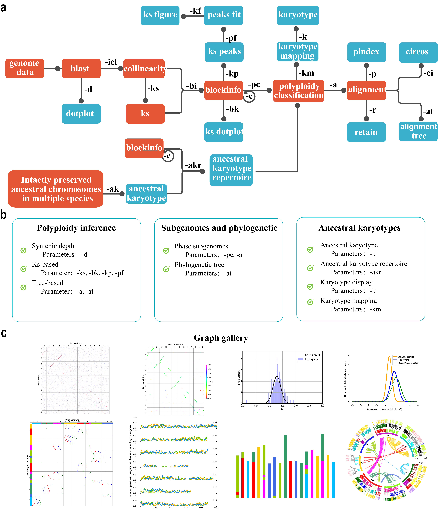

Introduction
The WGDI workflow consists of three main parts: (1) Polyploidy inference using Dotplot, Collinearity extraction, Ks distributions (2) Hierarchical inference of genomic homology resulted from recursive paleopolyploidizations. (3) Subgenomic and ancestral genome reconstruction and other evolutionary scenarios.
WGDI contains multiple subroutines, the user only needs to modify the configuration file simply, and then enter the name of the subroutine to be executed,
Such as wgdi -d your.conf. In the following, we will describe in detail the subroutines of WGDI software.
WGDI subroutine and function
Parameters |
Functions |
|
|---|---|---|
-h |
Help |
Show help message and exit |
-v |
Version |
Show program’s version number |
-d |
DotPlot |
Show homologous gene dotplot |
-icl |
Collinearity |
Improved version of ColinearScan |
-ks |
CalKs |
Calculate Ka/Ks for homologous gene pairs by YN00 |
-bi |
BlockInfo |
Collinearity and Ks speculate whole genome duplication |
-c |
Correspondence |
Extract event-related genomic alignment |
-bk |
BlockKs |
Show Ks of blocks in a dotplot |
-kp |
KsPeaks |
A simple way to get ks peaks |
-pf |
PeaksFit |
Gaussian fitting of ks distribution |
-pc |
polyploidy_classification |
Show event-related genomic alignment in a dotplot |
-km |
karotype_mapping |
Mapping from the known karyotype result to this species |
-k |
karotype |
Show genome evolution from reconstructed ancestors |
-sf |
Shared_fusion |
Quickly find shared fusions between species |
-fpd |
Fusion_positions_database |
Extract the fusion positions dataset |
-fd |
Fusion_detection |
Determine whether these fusion events occur in other genomes |
-a |
Alignment |
Alignment of hierarchical and event-related gene collinearity |
-at |
AlignmentTrees |
Phylogenetic trees constructed by collinear genes |
-p |
P-index |
Polyploidy-index characterize the degree of divergence among subgenomes of a polyploidy |
-r |
Retain |
Show subgenomes in gene retention or genome fractionation |
-ci |
Circos |
A simple way to run circos |
-conf |
Configure |
Display and modify the environment variable |